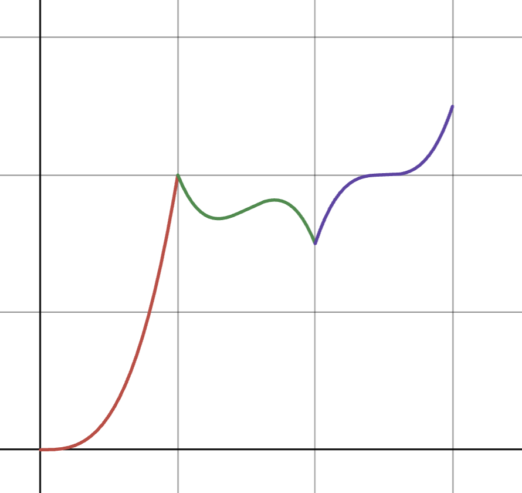

What are Generalized Additive Models (GAMs) and when should you use them?
Building intuition on how GAMs work and when they are useful
Published
August 22, 2024
What are GAMs?
GAMs are an advanced version of linear models that can handle nonlinear patterns in the data. Instead of assuming a straight-line relationship between the predictors and the outcome, GAMs use smooth curves to capture more complex relationships. The main ideas behind GAMs are:
Nonlinear predictor effects: The relationship between each predictor and the outcome is modeled using smooth curves, which can capture non-linear trends.
Additivity: The final prediction is made by adding up the effects of each predictor.
This is actually quite similar to linear regression! The main difference is that GAMs don’t require the relationship between each predictor and the outcome to be a straight line.
Even though GAMs allow for non-linear effects, they are still considered linear models because the smooth functions are simply added together. The functions don’t interact or get multiplied in complicated ways, keeping the overall model linear.
The coefficients are replaced by functions denoted by \(s_i\). These functions are non-parametric meaning that each function \(s_i\) is learned from the data, without assuming a specific shape (like linear or quadratic). This makes GAMs more flexible compared to linear models, where each predictor is simply multiplied by a constant \(\beta_i\).
In fact, linear models are just special cases of GAMs where each \(s_i\) is just a linear function instead of a smooth curve.
When to use GAMs?
Is a GAM the right choice for your problem? GAMs are useful when you see potential signs of nonlinearity in your data between a predictor variable and your response variable. This nonlinearity may show up in exploratory data analysis (EDA) with scatter plots that don’t look linear, or when you know from experience that the relationship isn’t linear.
Consider a simple example: the relationship between age and the number of sit ups someone can perform. We might expect that people maintain their physical fitness into their 30s, but as they get older their physical ability starts to decline.
Show the code
library(tidyverse)library(datasets)library(janitor)library(gratia)library(mgcv)performance_df <-read_csv("https://raw.githubusercontent.com/nicolesorense/GAM-article-resources/main/bodyPerformance.csv")# performance_df <- read_csv("/Users/nicolesorensen/Dropbox/bodyPerformance.csv")performance_df <- performance_df |>clean_names()set.seed(64)sampled_data <- performance_df |>sample_n(1000) # Sample for visibilitysampled_data |>ggplot(aes(x = age, y = sit_ups_counts)) +geom_point(alpha =0.2) +geom_smooth(method ="gam") +labs(x ="Age", y ="Number of sit-ups", title ="Number of sit-ups by age")
In this case, a nonlinear pattern is obvious in the data so a linear model would fall short.
To see how the GAM model accounts for this nonlinear relationship, we can visualize the partial effect that age has on the outcome variable, predicted number of sit-ups.
Show the code
gam_hr <-gam(sit_ups_counts ~s(age), data = sampled_data)partial_effect_plot <-draw(gam_hr, residuals =FALSE)partial_effect_plot +labs(title ='Partial effect of age on predicted number of sit-ups', subtitle ='s(age)',x ='Age')
The graph above shows the smooth function of age to predict number of sit-ups. We see that people between 20 and 30 have a positive partial effect, so they increase the predicted number of sit-ups, while people over 30 show a decline, which aligns with our expectations that older people are likely to do less sit-ups.
These partial effect plots are a major interpretability advantage of GAMs over other nonlinear models. They show the individual effect of each predictor on the outcome without the complexity of interactions and high dimensional surfaces.
When NOT to use GAMs?
How do I know when a GAM is not appropriate for my use case? Avoid GAMs when…
You need automatic interaction modeling: Since GAMs are additive, they might miss interactions between variables. While interaction terms can be added manually (as with linear regression), other models like random forests, gradient boosting machines, or support vector machines are better for capturing interactions automatically—especially if interpretability is not your primary concern.
You only care about prediction accuracy: In situations where prediction accuracy is your main goal, such as in Kaggle competitions, GAMs usually perform worse than more flexible models like XGBoost, LightGBM, or neural networks.
All relationships are expected to be linear: If your predictor-response relationships are expected to be linear, a linear regression model would suffice since it is simpler and more easily interpretable.
There is high concurvity between smooth functions: Concurvity is the GAM version of multicollinearity with linear regression. A GAM has high concurvity when one of the smooth functions is a sum of the others. This makes it difficult for the model to estimate the separate effects of predictors. You can check for concurvity using the concurvity() function in R, and if concurvity is high, this could be resolved by combining / removing predictors or switching to a different model.
Why use GAMs?
Life is not linear!
Although linear models are often sufficient to model many relationships, sometimes we do want to capture some complexity without oversimplifying it. GAMs are often advantageous over more complex models because their additive nature allows us to visualize the separate effects of each predictor on the outcome variable. This makes them much more interpretable than other “black-box” models like random forests and neural networks.
(from Introduction to Statistical Learning)
In this above representation of the tradeoff between flexibility and interpretability from “An Introduction to Statistical Learning”, we see that GAMs are both relatively flexible and interpretable, making them good for both prediction and inference.
How are the functions determined?
In GAMs, the smooth functions are typically created by splines. Splines are just piecewise polynomial functions that meet specific conditions to ensure smoothness across different segments of data.
Why not use a single polynomial across all data?
A single global polynomial can lead to poor fit, especially at the edges, and small changes in one part of the data can cause large changes elsewhere. This is called the Runge phenomenon, where high-degree polynomials oscillate and overfit in certain regions. Piecewise polynomials, or splines, resolve this by fitting local segments while ensuring smooth transitions across them.
Let’s walk through the progression of how these splines evolve from simple piecewise polynomials to the smooth functions used in GAMs.
Step 1: Piecewise Polynomials without Conditions
We can start by fitting piecewise cubic polynomials to different parts of the data. This means we divide the data into sections based on specific breakpoints and fit a cubic polynomial to each section independently.
In this example, we set two breakpoints at ages 30 and 60, fitting three separate cubic polynomials to different sections of the data. However, without additional conditions, there’s a major issue: the polynomials do not connect smoothly at the breakpoints, leading to discontinuities. For instance, the predicted number of sit-ups might suddenly drop from 27 to 18 at age 60, which is unrealistic.
Step 2: Ensuring Continuity
To address this, we need to impose the condition that the function is continuous across the different segments. This means the pieces must meet at the breakpoints, so the function values are the same at the knots.
After adding this continuity constraint, the splines are connected, and the function appears mostly smooth. However, in many cases, the function may still have abrupt changes at the breakpoints, or knots, even though it is continuous, looking something like this:

Step 3: Ensuring Smoothness
To create a smoother curve, we need to go a step further. In addition to making the function continuous, we also ensure the first and second derivatives (slope and curvature) are continuous at the breakpoints. This prevents sudden changes in the shape of the curve. GAMs do this automatically by using cubic splines.
Show the code
# Fit a GAM model using cubic splines on the sampled datafit_spline_sampled <-gam(sit_ups_counts ~s(age), data = sampled_data)# Generate predictions from the model for the sampled datasampled_data <- sampled_data |>mutate(predicted_sit_ups =predict(fit_spline_sampled, newdata = sampled_data))# Plot the sampled data and the fitted splinep_spline_sampled <- sampled_data |>ggplot(aes(x = age, y = sit_ups_counts)) +geom_point(alpha =0.2) +geom_line(aes(y = predicted_sit_ups), color ="blue", size =1) +labs(x ="Age", y ="Number of sit-ups", title ="Cubic Spline Fit")p_spline_sampled
With these conditions, the function is now both continuous and smooth. The process of fitting these smooth splines is automated in tools like the mgcv package in R, which makes it easy to apply.
How to choose the number of knots?
It’s important to choose the right number of knots when fitting splines. Too few knots can make the model too rigid, while too many can lead to overfitting. Typically, the best number of knots is selected using cross-validation, which helps balance model complexity and performance.
How to interpret GAMs?
Although GAMs are more interpretable than more complex nonparametric models, they can still sometimes be hard to understand.
Continuing with previous example, let’s add body fat percent to the model so that now there are now multiple predictor variables. The model equation is now of the form:
library(patchwork)gam_multiple <-gam(sit_ups_counts ~s(age) +s(body_fat_percent), data = sampled_data)partial_effect_plot_multiple <-draw(gam_multiple, residuals =FALSE)wrap_plots(partial_effect_plot_multiple) +plot_annotation(title ="Partial effects of predictors on number of push-ups")
These partial effects plots show how much the variable on the x-axis increases or decreases the predicted response, assuming all the other variables stay constant.
For example, in the body fat plot, people with low body fat have a positive effect, meaning they can do more sit-ups. In contrast, people with higher body fat have a negative effect, meaning they tend to do fewer sit-ups.
Categorical variables
GAMs handle categorical variables just like linear regression—using dummy variables. This means one category is chosen as the baseline, and all other categories are compared to that baseline.
For example, here’s how the model handles gender:
Show the code
sampled_data <- sampled_data |>mutate(gender =as.factor(gender))gam_cat <-gam(sit_ups_counts ~ gender, data = sampled_data, method ="REML")partial_effect_plot_cat <-draw(gam_cat, residuals =FALSE, parametric =TRUE)partial_effect_plot_cat +labs(title ="Partial effects of gender on number of sit-ups",x ="Gender")
In this case, female is the baseline, and the graph shows that males tend to do more sit-ups than females, with a positive partial effect. We can interpret this as:
“Males can do about 14 more sit-ups than females, assuming everything else is constant.”
The confidence interval shows we are 95% confident that the true difference is between 12 and 15 extra sit-ups.
What about interactions?
GAMs don’t automatically include interaction effects, but we can manually add them if we think the effect of one variable might depend on another.
For example, younger people with higher body fat might still perform well because they have more muscle and faster metabolisms. For older people, high body fat may have a stronger negative effect. Thus, we expect that the effect of body fat on number of sit-ups increases with age.
To model this interaction, we can include both age and bodyfatpercentage together.
In this plot, the contour lines show the interaction between age and body fat. If the lines were straight, it would mean that age and body fat are affecting sit-ups independently. However, the curved lines suggest that the effect of body fat on sit-ups depends on a person’s age, and vice versa.
For example, body fat doesn’t have much effect for younger people (flat lines), but it has a stronger negative effect for older people (steeper lines).
If the variables are on different scales, you can use te() (tensor product) to model their interaction instead of s().
Model assumptions
GAMs make several assumptions, some of which are similar to linear regression, while others are different.
Smooth functions instead of linear relationships:
Unlike linear regression where the predictors have linear relationships with the outcomes, for GAMs, the functions don’t have to be linear and can be anything that can be drawn as a squiggly line on a graph.
Model
Relationship type
Linear regression
Predictors must be linear
GAMs
Predictors can be nonlinear
How to check this assumption: Visualize the smooth functions using partial effects plots to see if the shape of the smooth functions make sense given your data.
Additivity of effects:
Just as with linear regression, the effects of each of the variables on the outcome are added together to get the response.
Model
How effects are combined
Linear regression
Effects are added together
GAMs
Effects are added together
How to check this assumption: There is no direct diagnostic for this, but if you suspect interactions, try adding interaction terms and see if they significantly improve the model fit. If they do, the additivity assumption is insufficient.
Independence of errors:
Same as with linear regression, GAMs assume that the errors are independent of each other. This helps ensure that no important patterns or variables are missing from the model.
Model
Assumption
Linear regression
Errors should be independent
GAMs
Errors should be independent
How to check this assumption: plot the residuals against fitted values, or if you are using time series data, the Durbin-Watson test will check for autocorrelation of the residuals.
Distribution of errors:
The required distribution of errors in GAMs depends on the type of outcome variable:
For a continuous response, the errors should be normally distributed.
For a binary response, the errors should follow a binomial distribution.
For count data, the errors should follow a Poisson distribution.
How to check this assumption: If the outcome is continuous (like the number of sit-ups), we check if the errors are normally distributed by looking at QQ plots and histograms of residuals.
Conclusion
The purpose of this article was to help build more intuition about how GAMs work and to help people determine if GAMs are appropriate for their use case.
We saw how GAMs are a balanced model in the sense that they are flexible enough to capture more complicated trends while still being simple enough where they can be easily interpreted. While GAMs are powerful, they do have their limitations like needing to handle interactions manually and needing to have a large enough data set to accurately capture the nonlinear patterns.
References
Basheer, K. C. S. (2024, August 12). Understanding generalized additive models (GAMS): A comprehensive guide. Analytics Vidhya. https://www.analyticsvidhya.com/blog/2023/09/understanding-generalized-additive-models-gams-a-comprehensive-guide/
Bottom of the Heap. (2020, July 30). Introduction to Generalized Additive Models with R and mgcv. YouTube. https://www.youtube.com/watch?v=sgw4cu8hrZM&t=957s
Department of Statistics & Data Science Carnegie Mellon University. (2024, July 2). Supervised learning: Nonparametric regression. SURE 2024. https://36-sure.github.io/lectures/18-nonparametric.html#/title-slide
James, G., Witten, D., Hastie, T., & Tibshirani, R. (2023). An introduction to statistical learning: With applications in R. Springer.
Larsen, K. (2015, July 30). Gam: The predictive modeling silver bullet. MultiThreaded. https://multithreaded.stitchfix.com/blog/2015/07/30/gam/
Québec Centre for Biodiversity Science. (2023, April). Workshop 8: Generalized additive models. QCBS R Workshop Series.
Shafi, A. (2021, May 18). What is a generalised additive model?. Medium. https://towardsdatascience.com/generalised-additive-models-6dfbedf1350a
Simpson, G. (2022, January 7). Statistical Methods Series: Generalized Additive Models (GAMs). YouTube. https://www.youtube.com/watch?v=Ukfvd8akfco